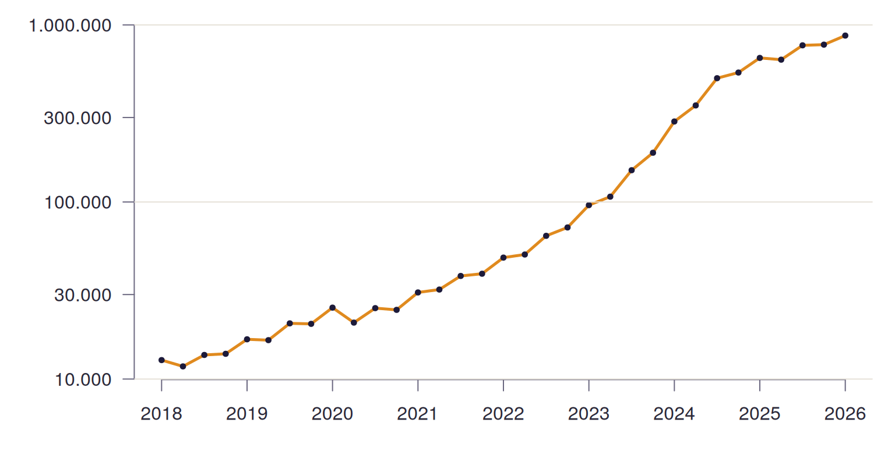

La base está cargada. Ahora respondemos las preguntas del capítulo 1 con lo que vimos en la presentación C04: INNER JOIN, agregaciones, HAVING, IN, vistas y vistas materializadas. Sumamos una herramienta nueva, las expresiones de tabla comunes (WITH), que ordenan las consultas largas. Escribimos las consultas como en C04: un atributo debajo del otro, con alias cortos para las tablas.
6.1 Un hogar, con sus etiquetas
Empecemos por algo chico: el hogar de cuatro generaciones que vimos en el capítulo 1, ahora desde la base. Los códigos se traducen con un INNER JOIN a cada catálogo, y el sexo, que no tiene catálogo, con un CASE:
SELECT p.componente, pa.descripcion AS parentesco,CASE p.sexo WHEN1THEN'Varón'ELSE'Mujer'ENDAS sexo, p.edad, ne.descripcion AS nivel_educativo, ca.descripcion AS condicion_actividadFROM personas pINNERJOIN parentescos pa ON p.id_parentesco = pa.idINNERJOIN niveles_educativos ne ON p.id_nivel_educativo = ne.idINNERJOIN condiciones_actividad ca ON p.id_condicion_actividad = ca.idWHERE p.codusu ='TQRMNOSUTHKOTNCDEIJAH00902653'AND p.anio =2026AND p.trimestre =1AND p.nro_hogar =1ORDERBY p.componente;
6 filas
componente
parentesco
sexo
edad
nivel_educativo
condicion_actividad
1
Jefe/a
Mujer
51
Primario completo
Inactivo
2
Cónyuge/Pareja
Varón
56
Primario completo
Ocupado
3
Madre/Padre
Varón
77
Primario completo
Inactivo
4
Hijo/Hijastro/a
Mujer
34
Superior universitario completo
Ocupado
5
Hijo/Hijastro/a
Varón
22
Secundario incompleto
Desocupado
6
Nieto/a
Mujer
7
Primario incompleto (incluye educación especial)
Menor de 10 años
Con las etiquetas se lee lo que en el CSV eran códigos: el padre de la jefa, la jefa y su cónyuge, sus dos hijos y una nieta. Volvemos sobre este tipo de hogar más adelante.
6.2 ¿Cuántas personas representa la encuesta?
Contar filas da el tamaño de la muestra; sumar el ponderador estima la población. El ponderador está en el hogar, así que hace falta unir cada persona con su hogar por la clave completa:
SELECT h.anio, h.trimestre,COUNT(*) AS personas_encuestadas,SUM(h.pondera) AS poblacion_estimadaFROM personas pINNERJOIN hogares h ON p.codusu = h.codusu AND p.anio = h.anioAND p.trimestre = h.trimestre AND p.nro_hogar = h.nro_hogarWHERE h.anio >=2024GROUPBY h.anio, h.trimestreORDERBY h.anio, h.trimestre;
9 filas
anio
trimestre
personas_encuestadas
poblacion_estimada
2024
1
46050
29593214
2024
2
47151
29656342
2024
3
47564
29720145
2024
4
46860
29783573
2025
1
45425
29847178
2025
2
46086
29908869
2025
3
44946
29970456
2025
4
43703
30032745
2026
1
43739
30095103
Unas 44.000 entrevistas por trimestre representan a unos 30 millones de personas: la población de los 31 aglomerados.
Para llegar a la región hay que recorrer todo el modelo, de personas a regiones. Con UNION ALL agregamos una fila con el total:
SELECT r.nombre AS region,SUM(h.pondera) AS poblacionFROM personas pINNERJOIN hogares h ON p.codusu = h.codusu AND p.anio = h.anioAND p.trimestre = h.trimestre AND p.nro_hogar = h.nro_hogarINNERJOIN viviendas v ON h.codusu = v.codusuINNERJOIN aglomerados a ON v.id_aglomerado = a.idINNERJOIN regiones r ON a.id_region = r.idWHERE h.anio =2026AND h.trimestre =1GROUPBY r.nombreUNIONALLSELECT'Total',SUM(h.pondera)FROM personas pINNERJOIN hogares h ON p.codusu = h.codusu AND p.anio = h.anioAND p.trimestre = h.trimestre AND p.nro_hogar = h.nro_hogarWHERE h.anio =2026AND h.trimestre =1ORDERBY poblacion;
7 filas
region
poblacion
Patagonia
1150084
Noreste
1488531
Cuyo
1886015
Noroeste
2875102
Pampeana
6460415
Gran Buenos Aires
16234956
Total
30095103
6.3 Nivel educativo según el sexo
Queremos, para la población de 25 años o más, qué porcentaje de varones y qué porcentaje de mujeres alcanzó cada nivel. La consulta tiene pasos: armar el grupo de adultos, calcular los totales por sexo y dividir. Con WITH cada paso tiene nombre y se lee de arriba hacia abajo:
WITH adultos AS (SELECT p.sexo, ne.descripcion AS nivel, ne.orden, h.ponderaFROM personas pINNERJOIN hogares h ON p.codusu = h.codusu AND p.anio = h.anioAND p.trimestre = h.trimestre AND p.nro_hogar = h.nro_hogarINNERJOIN niveles_educativos ne ON p.id_nivel_educativo = ne.idWHERE h.anio =2026AND h.trimestre =1AND p.edad >=25),totales AS (SELECTSUM(CASEWHEN sexo =1THEN pondera ELSE0END) AS varones,SUM(CASEWHEN sexo =2THEN pondera ELSE0END) AS mujeresFROM adultos)SELECT a.nivel,ROUND(100.0*SUM(CASEWHEN a.sexo =1THEN a.pondera ELSE0END)/ t.varones, 1) AS pct_varones,ROUND(100.0*SUM(CASEWHEN a.sexo =2THEN a.pondera ELSE0END)/ t.mujeres, 1) AS pct_mujeresFROM adultos aCROSSJOIN totales tGROUPBY a.orden, a.nivel, t.varones, t.mujeresORDERBY a.orden;
7 filas
nivel
pct_varones
pct_mujeres
Sin instrucción
0.4
0.6
Primario incompleto (incluye educación especial)
4.9
4.2
Primario completo
17.3
15.8
Secundario incompleto
15.7
12.7
Secundario completo
29.5
28.4
Superior universitario incompleto
12.5
12.5
Superior universitario completo
19.7
25.8
Acá se ve para qué servía la columna orden del catálogo: sin ella, «Sin instrucción» (código 7) quedaría al final.
6.4 Hogares que alquilan, 2018 y 2026
El porcentaje de hogares inquilinos por región, en el primer trimestre de cada año. IN filtra los dos años, y cada CASE dentro de SUM separa un año del otro. Los hogares sin dato de tenencia quedan afuera del cálculo:
SELECT r.nombre AS region,ROUND(100.0*SUM(CASEWHEN h.anio =2018AND h.id_tenencia =3THEN h.pondera ELSE0END)/SUM(CASEWHEN h.anio =2018THEN h.pondera ELSE0END), 1) AS pct_2018,ROUND(100.0*SUM(CASEWHEN h.anio =2026AND h.id_tenencia =3THEN h.pondera ELSE0END)/SUM(CASEWHEN h.anio =2026THEN h.pondera ELSE0END), 1) AS pct_2026FROM hogares hINNERJOIN viviendas v ON h.codusu = v.codusuINNERJOIN aglomerados a ON v.id_aglomerado = a.idINNERJOIN regiones r ON a.id_region = r.idWHERE h.trimestre =1AND h.anio IN (2018, 2026)AND h.id_tenencia ISNOTNULLGROUPBY r.nombreORDERBY pct_2026 DESC;
6 filas
region
pct_2018
pct_2026
Patagonia
23.2
26.0
Pampeana
21.9
23.7
Gran Buenos Aires
17.5
21.0
Cuyo
18.9
19.5
Noroeste
14.5
15.0
Noreste
15.5
13.8
6.5 Hogares con algún desocupado
Como dice C04, la mayor potencia de IN aparece con subconsultas. ¿Cuántas personas viven en un hogar donde hay al menos un desocupado? La subconsulta devuelve las claves de esos hogares e IN se queda con todas las personas que los integran:
SELECTCOUNT(*) AS personas_encuestadas,SUM(h.pondera) AS poblacionFROM personas pINNERJOIN hogares h ON p.codusu = h.codusu AND p.anio = h.anioAND p.trimestre = h.trimestre AND p.nro_hogar = h.nro_hogarWHERE p.anio =2026AND p.trimestre =1AND (p.codusu, p.anio, p.trimestre, p.nro_hogar) IN (SELECT codusu, anio, trimestre, nro_hogarFROM personasWHERE id_condicion_actividad =2AND anio =2026AND trimestre =1 );
1 fila
personas_encuestadas
poblacion
4914
4190977
Como la clave del hogar tiene cuatro columnas, IN compara las cuatro juntas, escritas entre paréntesis.
6.6 Tres generaciones bajo un mismo techo
¿En qué aglomerados es más frecuente que convivan tres generaciones o más? El parentesco con el jefe dice a qué generación pertenece cada persona: la madre, el padre o los suegros están una arriba; el jefe, su cónyuge y sus hermanos, en la misma; hijos, yernos y nueras, una abajo; los nietos, dos abajo. Un hogar tiene tres generaciones si sus integrantes cubren al menos tres de esos niveles.
WITH generaciones AS (SELECT codusu, anio, trimestre, nro_hogar,COUNT(DISTINCTCASEWHEN id_parentesco IN (6, 7) THEN1WHEN id_parentesco IN (1, 2, 8) THEN0WHEN id_parentesco IN (3, 4) THEN-1WHEN id_parentesco =5THEN-2END) AS cantidadFROM personasWHERE anio =2026AND trimestre =1GROUPBY codusu, anio, trimestre, nro_hogar)SELECT a.nombre AS aglomerado,ROUND(100.0*SUM(CASEWHEN g.cantidad >=3THEN h.pondera ELSE0END)/SUM(h.pondera), 1) AS pct_tres_generacionesFROM generaciones gINNERJOIN hogares h ON g.codusu = h.codusu AND g.anio = h.anioAND g.trimestre = h.trimestre AND g.nro_hogar = h.nro_hogarINNERJOIN viviendas v ON h.codusu = v.codusuINNERJOIN aglomerados a ON v.id_aglomerado = a.idGROUPBY a.nombreORDERBY pct_tres_generaciones DESCLIMIT10;
10 filas
aglomerado
pct_tres_generaciones
Formosa
17.2
Gran Salta
16.9
Jujuy-Palpalá
15.6
La Rioja
13.2
Corrientes
13.0
Gran Tucumán-Tafí Viejo
12.3
Gran Resistencia
11.9
Santiago del Estero-La Banda
11.9
Gran San Luis
11.7
Gran Mendoza
11.2
Los otros familiares y los no familiares no tienen un nivel definido: el CASE les asigna NULL y COUNT(DISTINCT ...) no los cuenta.
6.7 Los atributos derivados, en una vista
En el modelo decidimos no guardar la cantidad de miembros ni el ingreso per cápita familiar. Una vista los calcula cada vez que se los necesita: es una consulta guardada con nombre, que después se usa como si fuera una tabla.
CREATEVIEW ingresos_hogares ASSELECT h.codusu, h.anio, h.trimestre, h.nro_hogar,COUNT(*) AS miembros, h.ingreso_total_familiar,ROUND(h.ingreso_total_familiar /COUNT(*), 2) AS ingreso_per_capita, h.pondihFROM hogares hINNERJOIN personas p ON h.codusu = p.codusu AND h.anio = p.anioAND h.trimestre = p.trimestre AND h.nro_hogar = p.nro_hogarGROUPBY h.codusu, h.anio, h.trimestre, h.nro_hogar;
Un detalle que conecta con la normalización: la consulta agrupa solo por la clave primaria de hogares y, aun así, puede mostrar h.ingreso_total_familiar sin agregarlo. PostgreSQL acepta eso porque sabe que la clave primaria determina el resto de las columnas. Es una dependencia funcional, y el motor la usa.
SELECT*FROM ingresos_hogaresLIMIT5;
5 filas
codusu
anio
trimestre
nro_hogar
miembros
ingreso_total_familiar
ingreso_per_capita
pondih
TQRMNOPPQHJKKRCDEGPDJ00658291
2020
2
1
1
67000
67000
234
TQRMNOPPQHJKKRCDEGPDJ00658291
2020
3
2
2
33600
16800
80
TQRMNOPPQHJKKRCDEGPDJ00658291
2021
2
2
2
36000
18000
143
TQRMNOPPQHJKKRCDEGPDJ00658291
2021
3
2
2
47000
23500
150
TQRMNOPPQHJKKSCDEHJGH00790191
2022
3
1
1
36000
36000
184
6.8 El ingreso per cápita, trimestre a trimestre
Para los ingresos del hogar INDEC indica usar PONDIH, el ponderador corregido por no respuesta. El promedio ponderado es la suma de cada valor por su peso, dividida la suma de los pesos:
par(mar =c(4, 6, 1, 1), family ="sans", las =1)plot(ipcf$periodo, ipcf$ipcf_promedio, type ="l", log ="y", lwd =2.5,col ="#E08A1E", xlab ="", ylab ="", axes =FALSE)points(ipcf$periodo, ipcf$ipcf_promedio, pch =19, cex = .6, col ="#1C1A3A")axis(1, at =2018:2026, col ="#6B6880", col.axis ="#2A2838")marcas <-c(10e3, 30e3, 100e3, 300e3, 1e6)axis(2, at = marcas, labels =format(marcas, big.mark =".", scientific =FALSE),col ="#6B6880", col.axis ="#2A2838")grid(nx =NA, ny =NULL, col ="#E6E1D8", lty =1)

Figura 6.1: Ingreso per cápita familiar promedio, en pesos corrientes (escala logarítmica).
Son pesos corrientes: la curva muestra sobre todo la inflación. Para hablar de ingresos reales hay que deflactar con el índice de precios, que se puede traer de una API pública. Queda como puente hacia la unidad 5.
6.9 Una vista materializada
La vista anterior se recalcula cada vez que se consulta. Para un resumen que se mira seguido y cambia poco, conviene una vista materializada: se calcula una vez y el resultado queda guardado.
CREATEMATERIALIZEDVIEW resumen_trimestral ASSELECT r.nombre AS region, h.anio, h.trimestre,SUM(h.pondera) AS hogares,ROUND(100.0*SUM(CASEWHEN h.id_tenencia =3THEN h.pondera ELSE0END)/SUM(h.pondera), 1) AS pct_inquilinos,ROUND(SUM(i.ingreso_per_capita * i.pondih) /SUM(i.pondih)) AS ipcf_promedioFROM hogares hINNERJOIN ingresos_hogares i ON h.codusu = i.codusu AND h.anio = i.anioAND h.trimestre = i.trimestre AND h.nro_hogar = i.nro_hogarINNERJOIN viviendas v ON h.codusu = v.codusuINNERJOIN aglomerados a ON v.id_aglomerado = a.idINNERJOIN regiones r ON a.id_region = r.idGROUPBY r.nombre, h.anio, h.trimestre;
Consultarla es leer 198 filas ya calculadas, en lugar de recorrer más de un millón y medio:
El precio es que no se entera sola de los cambios. Cuando INDEC publique el segundo trimestre de 2026 y lo carguemos, hay que actualizarla:
REFRESHMATERIALIZEDVIEW resumen_trimestral;
6.10 Las cinco preguntas
Pregunta
Dónde quedó
Población por región y trimestre
INNER JOIN de personas a regiones, SUM(pondera) y UNION ALL para el total
Nivel educativo según el sexo
WITH en dos pasos y el orden del catálogo
Hogares que alquilan
CASE dentro de SUM para comparar 2018 con 2026
Tres generaciones
WITH, COUNT(DISTINCT ...) sobre un CASE
Ingreso per cápita
Vista con los atributos derivados y promedio ponderado con PONDIH
El mismo modelo sirve para lo que viene: en la unidad 4 estas tablas se pueden exportar a Parquet y consultar con DuckDB, y en la unidad 6 vemos cómo se reorganizan datos como estos en un modelo dimensional.